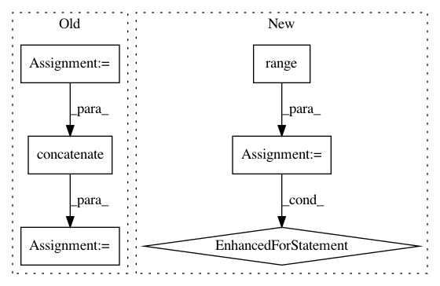

5af1994def9a52fe1ffd2847b2519f1e27cfbc64,niftynet/io/misc_io.py,,do_resampling,#Any#Any#Any#Any#,149
Before Change
return data_array
to_multiply = np.divide(pixdim_init, pixdim_fin[:len(pixdim_init)])
if len(to_multiply) < data_array.ndim:
ones = np.ones(data_array.ndim - len(to_multiply))
to_multiply = np.concatenate((to_multiply, ones))
to_multiply = to_multiply[:data_array.ndim]
data_resampled = scipy.ndimage.zoom(data_array,
zoom=to_multiply,
order=interp_order)
After Change
return data_array
to_multiply = np.divide(pixdim_init, pixdim_fin[:len(pixdim_init)])
data_resampled = []
for t in range(0, data_array.shape[4]):
data_mod = []
for m in range(0, data_array.shape[3]):
data_3d = data_array[..., m, t]
data_new = scipy.ndimage.zoom(data_3d,
to_multiply[0:3],
order=interp_order)
data_mod.append(data_new[..., np.newaxis])
data_mod = np.concatenate(data_mod, axis=-1)
data_resampled.append(data_mod[..., np.newaxis])
data_resampled = np.concatenate(data_resampled, axis=-1)
return data_resampled
In pattern: SUPERPATTERN
Frequency: 3
Non-data size: 6
Instances
Project Name: NifTK/NiftyNet
Commit Name: 5af1994def9a52fe1ffd2847b2519f1e27cfbc64
Time: 2017-08-12
Author: wenqi.li@ucl.ac.uk
File Name: niftynet/io/misc_io.py
Class Name:
Method Name: do_resampling
Project Name: SheffieldML/GPy
Commit Name: 929cf0a4890e418ecec0b000ed7fefa2372bc082
Time: 2015-09-07
Author: ibinbei@gmail.com
File Name: GPy/core/gp.py
Class Name: GP
Method Name: predict_jacobian
Project Name: keunwoochoi/kapre
Commit Name: fe8a6175dc98c7bc3b667fe88afcb5c2a4c94169
Time: 2017-01-17
Author: gnuchoi+github@gmail.com
File Name: kapre/stft.py
Class Name: Stft
Method Name: call